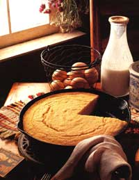
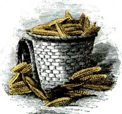
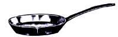
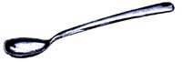

The corn bread chronicles
"YOU MISSED A SPOT," MY MOTHER SAIDlast night with considerable satisfaction, as I finished sweeping the front porch. Being dead for seven years hasn't quieted her down a bit. She appears regularly, unexpected and uninvited, to trail her hand along a dusty bookcase or to shake her head at a week's worth of newspapers strewn across the living room floor. She's right, of course. Compared with her well-ordered house, mine has always been, shall we say, relaxed.
Food is another matter. A reluctant cook, she served plain fare-sliced fresh tomatoes, steamed summer squash, fried chicken, and, her favorite food, corn bread-and was dazzled by anything fancier. I was 13 when she announced that I was a better cook than she was, and when she wanders into my kitchen these days, always welcome, she has only good things to say.
When it's been too long between visits, when I'm hungry for my mother's company, I make corn bread. When I need to impress her-just a little-I add almonds.
TO THE AMERICAN INDIANS, CORN was the great "mother and nourisher," the "giver of life." A Central American native domesticated at least 5,000 years ago, this giant grass fed Aztec and Maya, Inca and Iroquois, Navaho and Zuni alike.
Corn was able to support several high civilizations because of the way it was grown, cooked, and eaten. Columbus, who had departed a Europe where seed was haphazardly broadcast and allowed to grow up with the weeds, marveled at the neatness and economy of Indian agriculture. Without benefit of draft animals, fields were divided with geometric precision; in the center of each square, a mound was planted with corn, winter squash, and beans. The beans grew up the tall, straight cornstalks, and the sprawling squash vines kept the weeds down. Some anthropologists speculate that this productive, laborsaving scheme left leisure for such things as building pyramids.
The vegetables were also eaten together, and that was vital. Although corn is about 10% protein, it is deficient in two of the essential amino acids: lysine and tryptophan. Beans, rich in both, completed the protein, and squash supplied vitamin A.
Corn bread is rich in taste, rough in texture, and healthful in composition
Cooking was equally important. Universally, Native Americans added a pinch of ashes-hardwood or burned mussel shells-to a pot of corn. While corn contains niacin, a crucial B vitamin, it is bound with another molecule, which makes it unavailable to human beings. Ash-lime, or alkali-unbinds niacin and makes it usable. Wherever corn has become the primary staple without the dietary traditions that went with it, disease and death have followed: pellagra in Europe, Africa, and the American South, kwashiorkor in Africa. (Kwashiorkor, says anthropologist Margaret Visser, means "disease of the older child when a sibling is born"; it occurs when a child is weaned and placed on a cornbased diet.)
When European colonists arrived in Massachusetts in November of 1620 with nothing but some moldy wheat seeds, they managed to keep half their number alive by digging up (and recognizing as food) several caches of corn the Indians had buried for winter storage. Squanto, an amiable Indian who must have anticipated further losses ("there goes the neighborhood"), taught the colonists to plant and harvest their own maize. The next year, they made good the purloined grain from their first crop. (Squanto was inducted into the Agricultural Hall of Fame in Bonner Springs, Kansas, in 1984.)
Among natives and newcomers alike, corn was not usually eaten fresh. More often, it was dried, ground into meal, and baked into bread. Indians dampened cornmeal with water (the Incas used llama blood for ceremonial occasions) and laid the cakes in the ashes-hence "ash cakes." Colonists added buttermilk (another way of supplying corn's missing amino acids) and leavening, and discovered that the resulting bread kept and traveled well-hence "journeycake," later "johnnycake." Farmers found that the batter baked well on an iron hoe blade ("hoecake"). One way or another, Americans have been corn-bread-fed since pre-Columbian times.
TODAY, WITHOUT ASHES OR HOES, corn bread is still rich in taste, rough in texture, and healthful in composition. It's also one of the quickest and easiest hot breads to put on the table.
Ingredients. Most cornmeal is machine ground, a process that removes the fibrous bran and the nutritious germ. Far better is stone-ground meal, which includes the whole kernel and thus more flavor, body, and nutrients. (Also more oil; store it in the refrigerator.) In the absence of stone-ground meal, enriched degerminated. works fine. Meal is either white (popular in the South) or yellow (preferred in the rest of the country), depending on the color of the corn.
When the only grain used in a recipe, cornmeal produces an earthy, gritty bread. Many people lighten the texture by adding varying proportions of all-purpose flour. Grain lovers can substitute whole wheat pastry flour for all-purpose in any of the following recipes, keeping in mind that stone-ground meal and whole wheat flour produce a thumpingly grainy bread.
Some fat is necessary, although it's been kept to a minimum in the following recipes. Each of the muffins, for example, has less than a teaspoonful of added fat. Bacon grease is traditional, and the three or four North Americans who remain unconcerned about saturated fat and cholesterol will find it makes a very tasty bread. More common these days are margarine, butter, or vegetable oil, or some combination of those.
Buttermilk was the original low-fat milk-the tangy liquid left over from chuming but- Now cultured from skim milk, it adds buttery flavor without extra fat. Plain milk (whole or skim), low-fat or nonfat yogurt, or sour cream can add their distinctive flavors.
The leavening is baking soda or baking powder or both. Soda, an alkali, produces bubbles. of carbon dioxide (the same gas given off by slower-acting yeast) when combined with an acid-for example, buttermilk or yogurt. Hence, when substituting plain (sweet) milk for buttermilk in a recipe, omit the soda. With nothing to react to, it serves no purpose and leaves a soapy taste. Baking powder, which contains both acid and alkali, produces CO 2 , by reacting with itself.
Mixing. No need for mixers and processors; a spoon will serve. Two caveats: First, thoroughly mix the dry ingredients in one bowl (being especially certain to leave no foul-tasting lumps of baking soda or powder) and the wet ingredients in another, and keep them separate until just before baking. Second, add the wet ingredients to the dry without overmixing. Quickly stir the two together, just until the dry ingredients are barely incorporated. Overbeating will produce heavy bread.
Baking. Traditionally, corn bread was baked in a cast-iron skillet passed down for generations from mother to daughter. They greased the skillet, set it in a preheating oven until sizzling hot, then added the batter, which produced a very brown, crisp crust. But any greased metal or ceramic pan will do.
Serving. Corn bread needs to come to the table warm from the oven; if it sits around, its taste and texture suffer. On the other hand, leftovers are good sliced thin and toasted, and muffins freeze well wrapped in plastic wrap. To serve, remove the plastic, wrap the muffins in foil, and heat them in a toaster oven until warm; or leave them unwrapped and heat on high in a microwave, 20 to 30 seconds.
To the American Indians,corn was the great it mother and nourisher, the it giver of life.
Traditional Corn Bread
1 1/2 cups cornmeal
1/2 cup all-purpose flour
2 teaspoons baking powder
1/2 teaspoon baking soda
1/2 teaspoon salt
2 tablespoons sugar
2 eggs
1 cup buttermilk
3 tablespoons vegetable oil
Generously grease an 8" or 9" cast-iron skillet or square baking pan. Place pan in oven, and preheat to 400° F. In a large bowl, stir together dry ingredients; set aside. In a medium bowl, lightly beat eggs, then stir in buttermilk and oil. Add wet ingredients to dry, stirring quickly just until combined. Remove pan from oven, and pour batter into it. Bake 20-30 minutes, or until a wooden toothpick inserted in the center comes out clean. Cool 5 minutes in the pan before serving.
Variations: Add 2 tablespoons chopped fresh dill or 1 tablespoon chopped fresh basil to wet ingredients.
Pumpkin Corn Muffins
1 cup cornmeal
1 cup all-purpose flour
1/2 teaspoon salt
1/3 cup packed brown sugar
1 teaspoon baking powder
1/2 teaspoon baking soda
1/4 teaspoon cinnamon
1/4 teaspoon nutmeg
1/8 teaspoon allspice
1 egg
3 tablespoons melted butter or margarine
1 cup buttermilk
1/2 cup canned pumpkin or well drained cooked pumpkin
Preheat oven to 400°F and grease 12 muffin cups. Stir together dry ingredients; set aside. Combine wet ingredients, including pumpkin. Add wet ingredients to dry, stirring briefly just until most of the dry mixture is incorporated. Fill muffin cups, and bake 15-20 minutes, or until toothpick comes out clean. Cool in pan 5 minutes before removing.
Cranberry Corn Muffins
1 cup cornmeal
1 cup all-purpose flour
1/2 teaspoon salt
1/3 CUP sugar
1 teaspoon baking powder
1/2 teaspoon baking soda
1 egg
3 tablespoons melted butter or margarine
1 cup buttermilk
1 cup cranberries
Grease 12 muffin cups. Preheat oven to 400°F. Stir together dry ingredients, making sure they are well mixed; set aside. Lightly beat egg; stir in butter or margarine and buttermilk, and mix thoroughly. Add wet ingredients and cranberries to dry mixture, and stir quickly and sparingly, only until dry ingredients are incorporated. Fill muffin cups, and bake 15-20 minutes, or until toothpick inserted in muffins comes out clean. Cool 5 minutes in pan before removing.
Variations: In place of cranberries, use 1 cup blueberries; raspberries; pitted, chopped cherries; or sliced strawberries.
Almond Corn Muffins
1/ 2 cup sliced almonds
1 cup cornmeal
1 cup all-purpose flour
1/2 teaspoon salt
1/3 cup sugar
1 teaspoon baking powder
1/2 teaspoon baking soda
1 egg
3 tablespoons melted butter or margarine
1 cup buttermilk
1/4 teaspoon almond extract
Grease 12 muffin cups. Preheat oven to 400°F Briefly whirl almonds in a blender or food processor until partially chopped. Combine almonds with other dry ingredients, and set aside. Combine wet ingredients, and add to dry, stirring briefly until most dry ingredients are incorporated. Fill muffin cups, and bake 15-20 minutes, or until toothpick comes out clean. Cool in pan 5 minutes before removing.
Mexican Corn Bread
1 cup cornmeal
3/4 cup all-purpose flour
2 teaspoons baking powder
1 teaspoon baking soda
1/2 teaspoon salt
2 eggs
1 cup kernel corn
1 cup buttermilk
3 tablespoons vegetable oil or melted
butter or margarine
1 cup grated Cheddar
1/4 cup seeded and chopped jalapeño peppers
Grease an 8" or 9" iron skillet or square baking pan. Place pan in oven, and preheat to 400°F. In a large bowl, stir together the cornmeal, flour, baking powder, baking soda, and salt. Set aside. In a medium bowl, lightly beat eggs, and stir in corn, buttermilk, oil (or butter or margarine), cheese, and peppers. Add to dry ingredients, and stir until just combined. Remove pan from oven, and pour the batter into it. Return to oven, and bake 25 minutes, or until a toothpick inserted in the center comes out clean. Cool in the pan 5 minutes before serving.
|
THOM DeSANTO THE BETTMANN ARCHIVE |
 |
 |
|
|
 |
 |